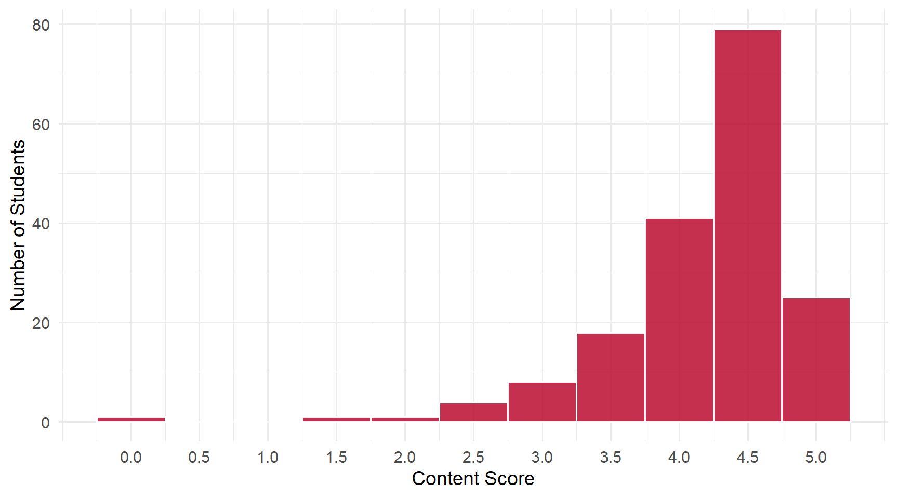
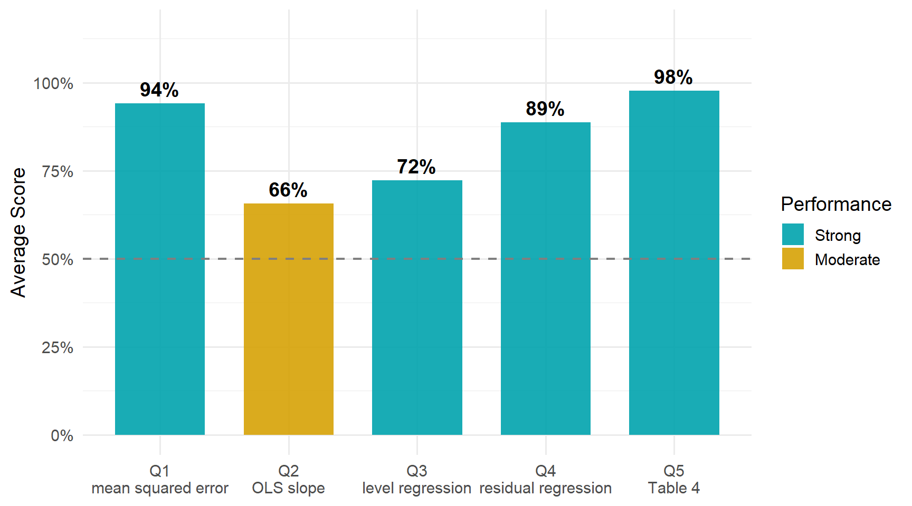

3 Daily 12 — Oct 1
3.1 Class Performance
Students: 178 | Content mean: 4.19 / 5 | Median: 4.5 | SD: 0.70 | Mean daily score: 9.67 / 10
Content scores ranged from 0 to 5 out of 5. (Your daily score adds the 8-point attendance credit for submitting; each question is worth 0.4 of the remaining 2 points.)
Q1 and Q5 were answered almost universally. The credit was lost on Q2, Q3 and Q4, and Q2’s most common answer is worth a careful look: it is a correct formula, but for a different object.
3.2 Score Distribution
3.3 Performance by Question

ImportantThe pattern worth taking from this daily
A population quantity and its estimator are different objects, and the notation has to say which one you mean.
Q1 and Q2 came as a pair. Q1 asked what the population coefficients minimize: the mean squared error, \(E[(y - b_0 - b_1 x)^2]\). The solution to that problem is the population slope,
\[\beta_1 = \frac{\text{cov}(x, y)}{\text{var}(x)}.\]
Q2 asked for the estimator, \(\hat\beta_1\), which replaces each population moment with its sample counterpart:
\[\hat\beta_1 = \frac{\widehat{\text{cov}}(x_i, y_i)}{\widehat{\text{var}}(x_i)} = \frac{\sum_i (x_i - \bar x)(y_i - \bar y)}{\sum_i (x_i - \bar x)^2}.\]
About six students in ten wrote the first formula when the question asked for the second. They wrote cov over var with no hats, or the same ratio in expectations. That earned half credit: the shape is exactly right, but it is the quantity being estimated, not the estimator.
The hat is not decoration. It marks the difference between the number we want to know and the number we can compute from a sample.
3.4 Questions
3.4.1 Q1: The population regression coefficients minimize the ___ between the outcome and the regression approximation.
TipCorrect Answer
The mean squared error, MSE. The population coefficients solve
\[\min_{b_0,\, b_1} \; E\!\left[(y_i - b_0 - b_1 x_i)^2\right].\]
The sample version of the same problem, OLS, minimizes the sum of squared residuals. The population problem takes the expectation of the squared error, and the word that marks the difference is mean.
WarningCommon Errors
Nearly everyone answered “mean squared error”. The few misses:
- Squaring without the mean, as in “squared error” or “squared difference”. That is the sample criterion, the one OLS minimizes, so it earned half credit.
- A different statistic, such as “standard error” or “variance”. Neither measures the squared gap between the outcome and the approximation.
- No squaring at all, as in “error” or “distance”.
3.4.2 Q2: Write down the formula for the OLS estimator of \(\beta_1\) in the simple linear regression model.
TipCorrect Answer
\[\hat\beta_1 = \frac{\widehat{\text{cov}}(x_i, y_i)}{\widehat{\text{var}}(x_i)} = \frac{\sum_i (x_i - \bar x)(y_i - \bar y)}{\sum_i (x_i - \bar x)^2}.\]
The sample covariance of \(x\) and \(y\) over the sample variance of \(x\), in any equivalent notation. The correlation form, \(r\, s_y / s_x\), is the same estimator.
WarningCommon Errors
- The population formula in place of the estimator. This was by far the most common shortfall; see the callout above. Writing the population form and then setting it equal to a hatted or summed version counted, because the estimator is there.
- The square missing from the denominator. Without it the denominator \(\sum_i (x_i - \bar x)\) is always exactly zero, because deviations from the mean sum to zero.
- The correlation in place of the covariance. The correlation is already divided by both standard deviations, so dividing it by \(\text{var}(x)\) again gives the wrong quantity.
- The residual-based formula copied from Q4’s question. That is the multiple-regression version; Q2 asked about the simple regression.
3.4.3 Q3: The “level” regression in Table 3 suggests that the average return to another year of schooling is ___ (value) ___ (units).
TipCorrect Answer
About 29.6 cents. Wages in the Card data are recorded in cents per hour, so Table 3 prints the level coefficient as 29.655 — cents. The same amount in dollars (“$0.30” with “dollars”) earned full credit too: what matters is that the value and the units belong together.
The level regression measures the return in money, and the log regression beside it measures it in percent. The 5.2 percent in Table 3’s other column answers a different question.
WarningCommon Errors
- The right number with the wrong units. This was the largest error, about a third of answers: 29.655 copied from Table 3 and labelled “dollars”. The table’s number is in cents, because the wage is recorded in cents per hour. The deck’s own text puts it at “almost $.30”.
- The log regression’s answer, 5.2 percent, from the other column of the same table.
- A value with no units, or a word that is not a unit (“wage”) in the units blank.
- Mixed scales, such as a dollar-form value labelled cents (“$0.30 cents”).
“30 cents”, “29.6 cents” and “$0.30” all earned full credit.
3.4.4 Q4: In the multiple regression model, \(\hat\beta_1 = \widehat{\text{cov}}(\hat r_{i1}, y_i) / \widehat{\text{var}}(\hat r_{i1})\), where \(\hat r_{i1}\) is the ___ from a regression of ___ on ___.
TipCorrect Answer
The residual from a regression of \(x_1\) on \(x_2\).
This is the regression-anatomy, or Frisch–Waugh–Lovell, result. Regressing \(x_1\) on \(x_2\) and keeping the residual strips out the part of \(x_1\) that \(x_2\) can explain. The coefficient on \(x_1\) in the multiple regression is then the simple-regression slope of \(y\) on what is left. That is the precise sense in which multiple regression “holds \(x_2\) constant.”
WarningCommon Errors
- A bare “\(x\)” for \(x_1\). This was common, about one answer in five, and usually came as “residual, \(x\), \(x_2\)”. It counted as \(x_1\) whenever the last blank named \(x_2\) or “the other \(x\)’s”, since in this two-regressor model it can only mean \(x_1\). Still, name the regressor: with more than two, a bare “\(x\)” would not say which one.
- The outcome in the auxiliary regression, such as “\(y\)” or “wages” in place of \(x_1\). The auxiliary regression never involves \(y\): it regresses one regressor on the others.
- A different word for “residual”, such as “error”, “estimate” or “regression”.
“All the other \(x\)’s” in the last blank is the general Frisch–Waugh–Lovell statement. In this two-regressor model it means \(x_2\), and it earned credit.
3.4.5 Q5: Table 4 suggests that the average return to another year of schooling is ___, and the estimated coefficient (is/is not) statistically significant.
TipCorrect Answer
7.5 percent, and it is statistically significant. The full regression and the residual regression in Table 4 return the same coefficient, which is the regression-anatomy result from Q4 at work.
WarningCommon Errors
Nearly everyone answered “7.5 percent, is significant”. A few said the coefficient “is not” significant. A few gave it as the decimal 0.075, which counted as the same quantity.
3.5 What the Class Did Well
The population criterion. 93 percent named the mean squared error, the idea the whole regression deck is built on.
Reading Table 4. 97 percent reported the return and its significance correctly.
Regression anatomy. “Residual” was close to universal on Q4. Most students knew that the multiple-regression coefficient comes from what is left of \(x_1\) after the other regressor has been taken out.
3.6 What to Review
- \(\beta_1\) versus \(\hat\beta_1\). Put hats on estimated moments, or write the sums over the sample.
- Mean squared error versus the sum of squared residuals. The first is the population criterion; the second is its sample counterpart, which OLS minimizes.
- Know your units. Card’s wages are recorded in cents per hour, so the level regression’s 29.655 is in cents: about 30 cents, or $0.30.
- The square in \(\sum_i (x_i - \bar x)^2\) is essential. Without it the sum is always zero.
- Name the regressor. In a model with \(x_1\) and \(x_2\), the residual comes from regressing \(x_1\), specifically, on \(x_2\).
NoteHow this was graded
Every paper was scored twice, independently, against the same published rubric, by graders who could not see each other’s scores or your name. Q4 was then re-scored from scratch by two fresh blind passes after its rubric was clarified. In the end the two passes agreed on more than 99% of all scores, and every remaining disagreement was reviewed a third time against the rubric and settled with a written reason. Submitting the daily earns 8 of 10 regardless of content.